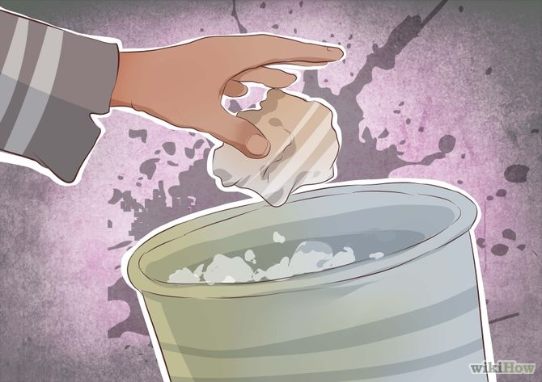
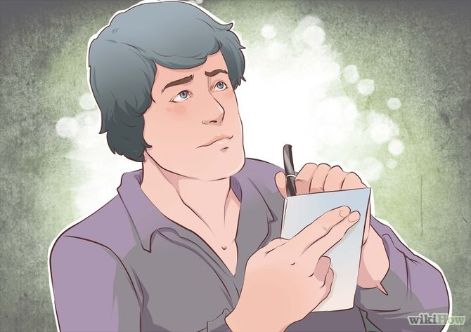
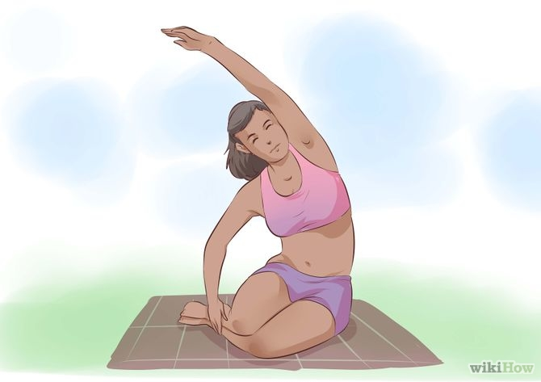
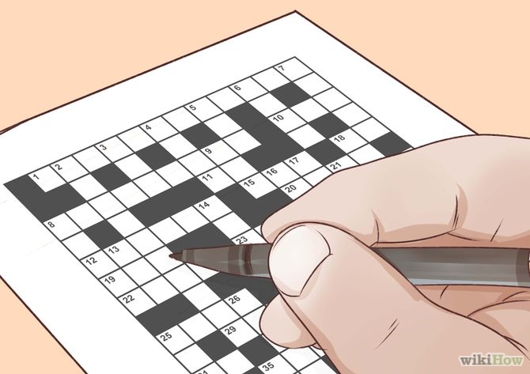
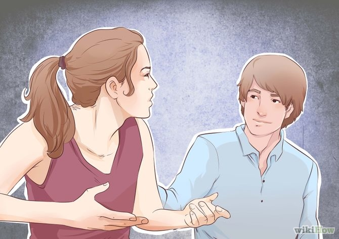
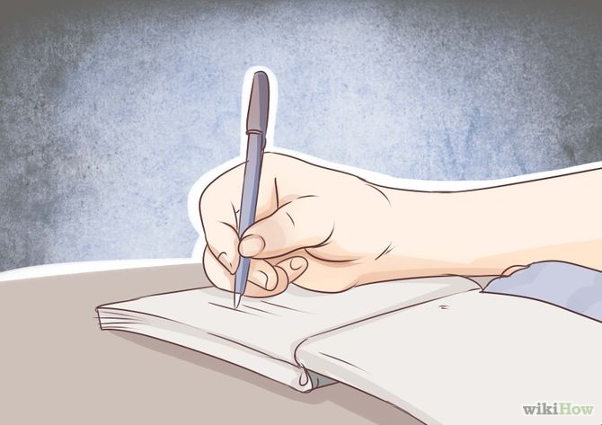
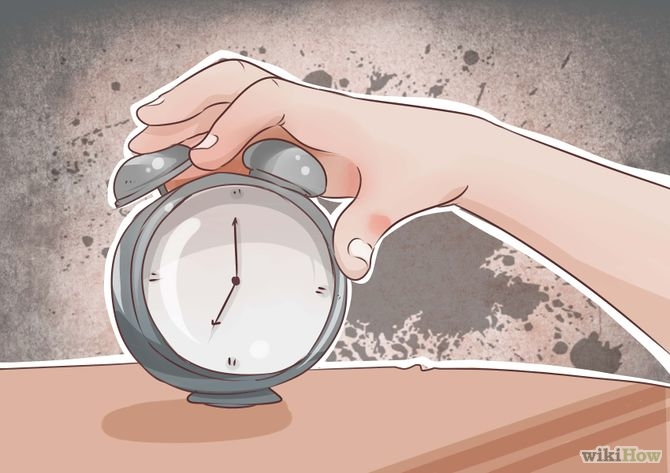
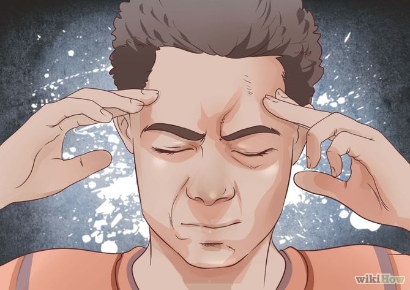

ترجمه مقاله توسط: Ahmad Hejazee
ممکن است یک حادثه ی غم انگیز یا یک شخص فکر شما را به خود مشغول کرده باشد. شما نمی توانید از فکر کردن به یک حادثه ی خجالت آور یا یک شخص خاص دست بردارید. چنین افکاری رایج هستند، ولی اگر به گونه ای باشند که زیاد حواس شما را پرت کنند، راه هایی وجود دارد که خودتان را از شر افکار ناخواسته خلاص کنید. برای شروع تمام حواس تان را به این مقاله متمرکز کنید.
در این مقاله سه روش عملی را به شما معرفی می کنیم. هر روش، دارای چند مرحله می باشد.
روش اول: از مغزتان استفاده کنید.
1 - سعی کنید افکارتان را بپذیرید. اگر شما تلاش کرده اید که به یک موضوع یا یک شخص فکر نکنید، حتما میدانید که این کار واقعا ممکن نیست (چرا که اگر به این آسانی بود، هیچ وقت این مقاله رو نمی خواندید.)
در واقع تحقیقات نشان داده که بهتر است افکار ناخواسته تان را قبول کنید نه این که آن ها را از خود دور کنید. در یکی از مطالعات، شرکت کنندگانی که قبول کردن افکارشان را تمرین کرده بودند، نسبت به کسانی که سعی در دور کردن افکار داشتند، وسواس کمتری داشتند، میزان افسردگی کمتری را تجربه کردند و کمتر نگران بودند.
- قبول کردن افکارتان، یا به عبارت دیگر متفکر بودن، به این معنی نیست که شما می بایست افکارتان را دوست داشته باشید یا حتی آن ها را قبول داشته باشید. شما فقط باید به سادگی افکارتان را به عنوان بخشی از واقعیت فعلی تان بپذیرید. به افکارتان اجازه دهید که وجود داشته باشند و هیچ تلاشی برای کنترل کردن یا تغییر آن ها نکنید. با این کار شما قدرت را از آنها میگیرید و باعث میشود که افکارتان کمتر در ذهن تان تکرار شوند.
2 - حواس پرتی متمرکز. احتمالا شما تاکنون سعی کرده اید که حواس تان را به چیز دیگری پرت کنید تا افکار ناخواسته را از ذهن تان بیرون کنید. اما آیا تا کنون حواس پرتی متمرکز را امتحان کرده اید؟ مطالعات نشان می دهد که بهتر است حواس تان را فقط به یک چیز پرت کنید نه این که مرتبا از یک موضوع به موضوع دیگر جهش کنید تا تمرکز تان را از افکار ناخواسته منحرف کنید. ذهن سرگردان به صورت ناخواسته و غیر ارادی با ناراحتی همراه خواهد بود. پس یک کار خاص یا یک کتاب یا یک قطعه موسیقی را برای تمرکز انتخاب کنید و تمام حواس تان را روی آن جمع کنید.

3 - افکارتان را به بیرون پرت کنید. در یک مقاله که در مجله ی علوم روانشناسی منتشر شد، محققان به این نتیجه رسیدند که وقتی مردم افکارشان را روی یک قطعه کاغذ می نویسند و سپس آن کاغذ را دور می اندازند، به صورت ذهنی افکارشان هم با کاغذ دور انداخته میشود.

4 - دنبال درس بگردید. اگر افکار سمج شما به خاطر اشتباهی است که مرتکب شده اید، و شما آن اشتباه را داخل ذهن تان دائما تکرار میکنید، سعی کنید که با آن به مشابه یک درس برخورد کنید. از خودتان سوال کنید که از این اشتباه تان چه درسی می توانید بگیرید؟ سعی کنید آن را در حد یک جمله یا کمتر خلاصه کنید و سپس آن را بنویسید.
روش دوم: خود را مشغول نگه دارید

1 - فعالیت کنید. مشغول شدن به یک ورزشی که مستلزم تمرکز روی بدن تان است و یا نیازمند هماهنگی بین دست و چشم هایتان است، یک راه خوب برای پاک کردن ذهن می باشد. علاوه بر این، تمرین کردن فایده ی دیگری هم دارد و سبب تولید انتقال دهنده های عصبی مربوط به احساسات خوب، و اندورفین ها می شود. که حال تان را بهتر خواهد کرد.

2 - یک فعالیت ذهنی درگیر کننده را انجام دهید. با حل کردن یک جدول سودوکو، جدول کلمات متقاطع، یا حل مسائل پیچیده ی ریاضی و یا پیگیری کردن یک سری مراحل پیچیده برای انجام یک پروژه، خودتان را درگیر یک چالش ذهنی کنید. تمرکز ذهنی که برای انجام این گونه فعالیت ها لازم است، سبب می شود که شما دیگر فرصت و انرژی ذهنی برای فکر کردن به افکار ناخواسته تان نداشته باشید.
3 - بخندید. خندیدن می تواند ذهن شما را از نگرانی ها رها کند. زمانی که ما می خندیم، مغز ما درگیر می شود -- مغز به بدن فرمان میدهد تا یک سری از ژست ها و صداها را تولید کند.
خندیدن به کاهش استرس کمک میکند. بنابراین اگر افکار مکرر شما باعث پریشانی تان میشوند، خنده واقعا یک درمان موثر است. با دوستانی که شما را به شدت می خندانند همصحبت شوید، یک فیلم خنده دار ببینید یا در یک کلاس یوگای خنده شرکت کنید. حتی می توانید درمانگرانی را بیابید که تخصص شان "درمان با خنده" است. در این تخصص، به مردم یاد داده می شود که آزادانه به چیزهایی بخندند که در حالت معمول خنده دار نیستند و همچنین یاد داده می شود که چگونه میتوان برای مقابله با وضعیت های دشوار، از شوخ طبعی استفاده کرد.

4 - از افکارتان صحبت کنید. اغلب بهترین راه برای اینکه یک فکر را از سرتان بیرون کنید، این است که آن را با یک نفر دیگر به اشتراک بگذارید. نزد یک دوست یا یکی از اعضای خانواده تان که شنونده ی خوبی است بروید و آنچه در سرتان میگذرد را برایش بیان کنید. اگر گمان میکنید درگیر شدن با افکارتان پیچیده تر از آن است که یک دوست بتواند به شما کمک کند، نزد یک درمانگر متخصص یا یک مشاور بروید تا به شما کمک کند.
روش سوم: افکار تان را متوقف کنید.

1 - افکارتان را بنویسید.
افکارتان شما را از فعالیت های روزمره تان باز میدارند و سبب ناراحتی، اضطراب، و نگرانی شما می شوند. پس اولین کاری که باید انجام دهید این است که آن ها را روی کاغذ بنویسید. تمام افکار ناراحت کننده تان را به ترتیب بنویسید. ابتدا مواردی که بیشترین استرس را دارند و در انتها آنهایی که کمترین میزان استرس را دارند.
- برای مثال، اگر شما دائما فکر میکنید که ممکن است شغل تان را از دست بدهید، فهرست شما می تواند چنین چیزی باشد: 1 - چگونه میتوانم بدهی هایم را پرداخت کنم و از فرزندم مراقبت کنم؟ 2 - اگر کار جدیدی پیدا نکنم چه میشود؟ 3 - اگر همراه وسایلم در یک جعبه، خارج از اداره تحت تعقیب قرار بگیرم، خیلی خجالت زده خواهم شد.
- شما باید تمرین تان را از موردی که کمترین استرس را دارد شروع کنید.
2 - فکرتان را مجسم کنید. در یک مکان خصوصی، بنشینید یا دراز بکشید. چشمان تان را ببندید. وضعیتی را تصور کنید که ممکن است دچار این فکر استرس زا شوید.

3 - فکر را متوقف کنید. یک زمان سنج، یا ساعت یا آلارم را برای مدت سه دقیقه تنظیم کنید. سپس بر روی افکر ناخواسته تان تمرکز کنید. هنگامی که زمان سنج یا آلارم به پایان رسید، فریاد بزنید. "بسه!". این اشاره ی شما برای خالی کردن ذهن شما از آن فکر خواهد بود. آگاهانه به یک فکر دیگر فرو بروید (مثلا به تصویر ساحل دریا فکر کنید یا ...) و ذهن تان را برای مدت سی ثانیه روی آن فکر یا تصور ثابت کنید. اگر فکر ناراحت کننده در طی این مدت بازگشت، مجددا فریاد بزنید "بسه!".
- اگر بخواهید، می توانید وقتی میگویید "بسه" از جای خود برخیزید و یا با انگشتانتان ضربه بزنید یا دستانتان را به هم بکوبید. این کارها فرمان "بسه!" را تقویت میکنند و بیشتر افکارتان را متوقف میکنند.
- به جای استفاده از زمان سنج، می توانید صدای خودتان را که در فواصل یک، دو، و سه دقیقه، فریاد میزنید "بسه!" روی نوار ضبط کنید. و سپس از نوار ضبط شده برای انجام تمرین متوقف کردن افکار استفاده کنید. وقتی که صدای خود را که میگویید "بسه" می شنوید، ذهن تان را برای سی ثانیه خالی کنید.

4 - تمرین کنید. این تمرین را آنقدر تکرار کنید تا به مرحله ای برسید که آن فکر با یک فرمان از ذهن تان دور شود. سپس تمرین را مجددا تکرار کنید و این بار فکرتان را با گفتن "بسه" با صدای آرام (نه با فریاد) متوقف کنید. هنگامی که صدای آرام شما بتواند فکر را متوقف کند، سعی کنید که "بسه" را زمزمه کنید. به مرور زمان، شما خواهید توانست که فقط شنیدن کلمه ی "بسه" را در ذهن تان تصور کنید.
در این مرحله، شما باید قادر باشید آن فکر را در هر زمانی و هر کجا که رخ دهد متوقف کنید.
وقتی شما به این مرحله از کنترل و تسلط رسیدید، فکر بعدی را از روی لیست تان انتخاب کنید و تمرین متوقف کردن افکار را با فکر جدید ادامه دهید.
چند نکته:
- با خود نگویید "من موفق شدم دیگر به فلان مسئله فکر نکنم" یا "من نمی توانم به فلان مسئله فکر کنم"
زیرا این کار فقط باهث می شود که شما بیشتر به آن شخص یا آن چیز فکر کنید. - انتظار نداشته باشید که نتایج فورا حاصل شوند. کاملا ممکن است که حتی پس از اینکه همه ی این کارها را انجام دادید، هنوز افکار ناخواسته در مورد آن شخص یا آن موقعیت گهگاه به ذهن شما خطور کند. این را به عنوان یک بخش طبیعی از هدف تان برای ادامه دادن در نظر بگیرید. با خودتان صبورانه برخورد کنید. و تمرین را ادامه دهید و بدانید که بالاخره فکر این شخص یا وضعیت با گذر زمان در ذهن شما کمرنگ و محو خواهد شد.
- اگر به آن فکر میکنید، سعی کنید با یک نفر یک مکالمه را آغاز کنید. به این ترتیب، به صحبت هایی که طرف مقابل تان میکند توجه خواهید کرد نه به آن وضعیت بد.
- اگر آن شخص را روزانه میبینید، او را در ذهن تان به عنوان یک شخص دیگر تصور کنید.
نظرات شما
قسمت نظرات با استفاده از سرویس دیسکاس پیاده سازی شده است. متاسفانه این سرویس از داخل ایران قابل دسترس نیست. لطفا از آی پی خارجی استفاده کنید.